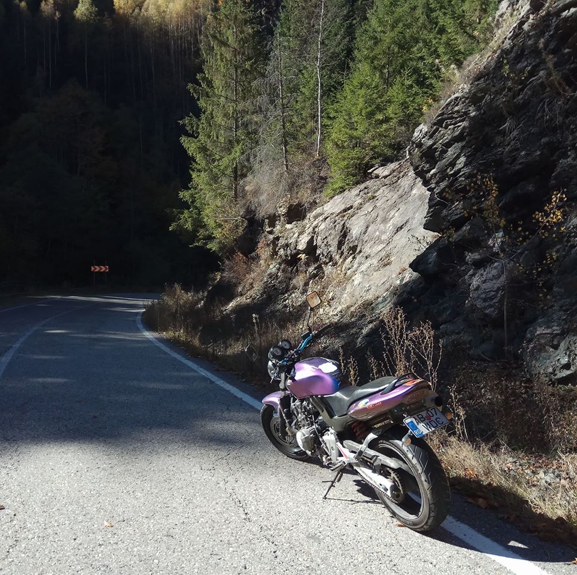
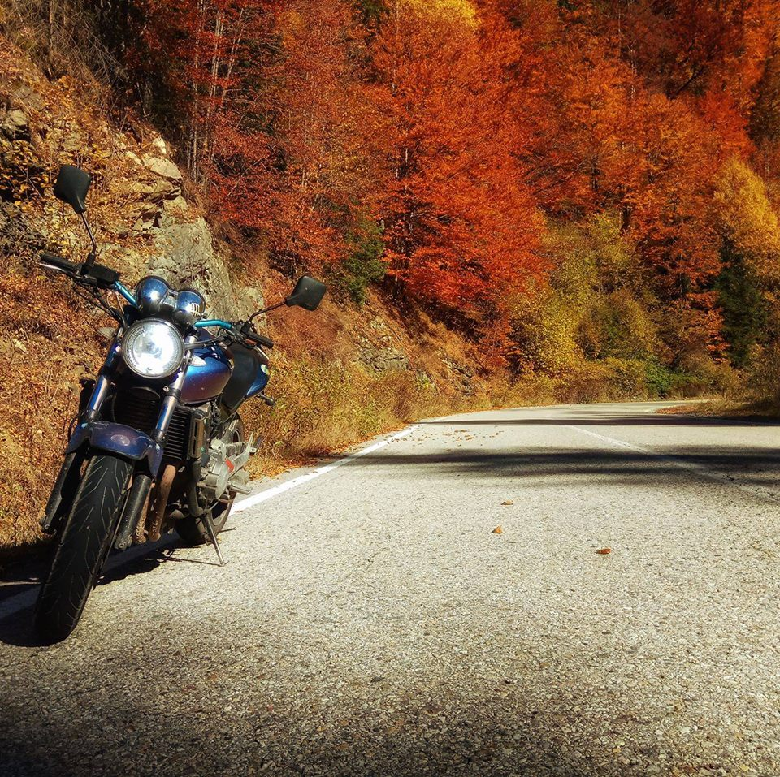

Honda hornet 600


Al doilea hobby este sa fotografiez
Alte activitati
Imi place mult sa fac plimbari in natura,sa escaladez muntii ,
sa fac cat mai multe excursii.
De exemplu dn anul 1 de facultate a fost prima data cand am iesit
de pe meleagurile mioritice datorita scolii care ne-a trimis in practica
in Germania dupa ce am dat un scurt interviu de limba engleza sa se asigure
scoala ca ne descurcam acolo. asta a fost startul meu in calatori de distanta
mai mare decat pana intr-un judet vecin.
A doua oara a fost anul doi de facultate
cand am optat sa plec cu bursa Erasmus la studii in strainatat.tara aleasa de mine
a fost Polonia si nu regret deloc deoarece este o tara frumoasa si pe de alta parte
ne-am descurcat foarte bine cu banii deoarece zlotul polonez este echivalentul unui
leu si noi de la scola am primit euro.
Asa m-am invatat cu Erasmus si am plecat si anul 3 si anul 4 de studii,aceias tara doar ca oras diferit